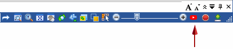
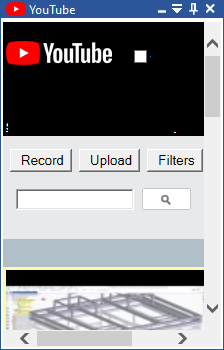

YouTube search and playback
You can search and view YouTube videos from within Solid Edge, by opening the YouTube tool pane from bottom-right in the Solid Edge application window.


Search
Uploaded Solid Edge videos automatically receive the Solid Edge tag. When entering a search string, Solid Edge is added to the search string automatically but does not display. You can also apply predefined Filters to refine the search. The search results display on the docking pane. A maximum of twenty results display on the pane. Use the Previous and Next buttons to navigate to additional results pages.
Playback
To play a video, click the video and a window opens to play the video. You can Share a video, Like or Dislike a video, or flag a video as Inappropriate . You can also add comments about the video in the Comments field.
Record and Upload
The YouTube pane also contains the Record and Upload commands for your convenience. You can also Sign In to Google by clicking the link at the top of the tool pane.